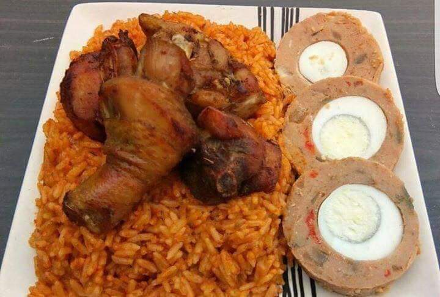
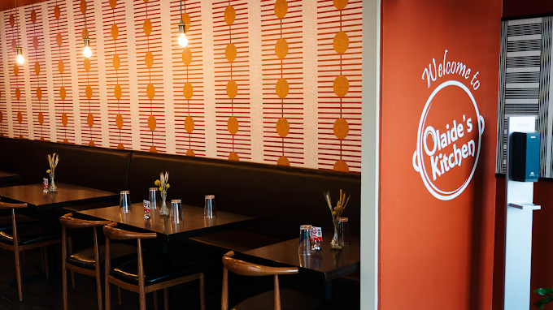
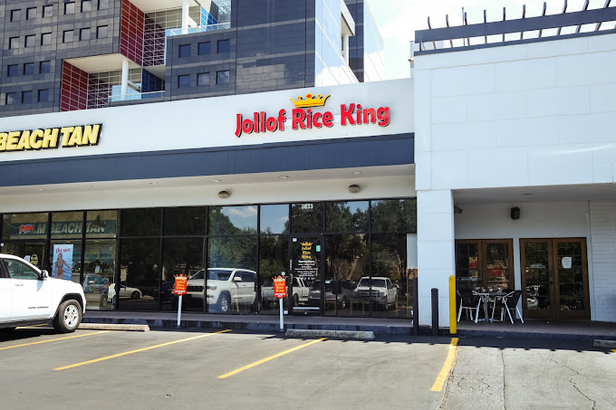
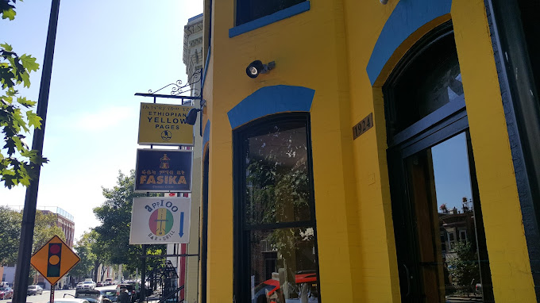
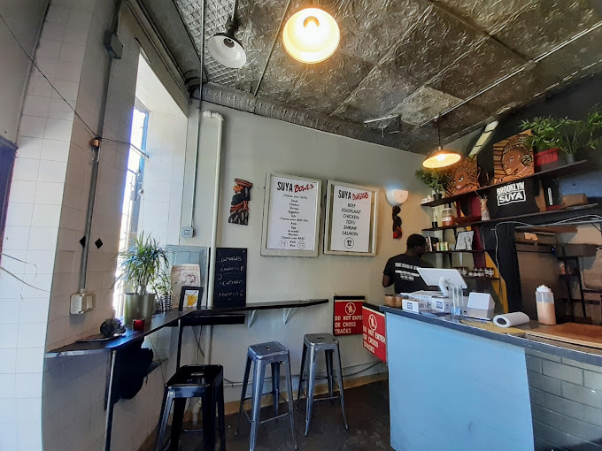
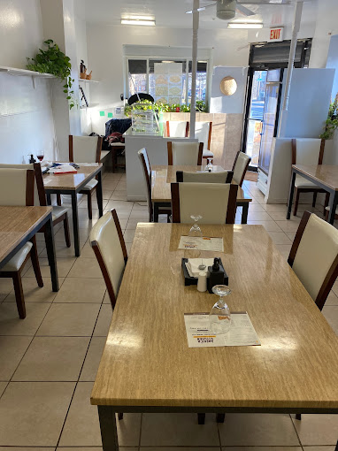
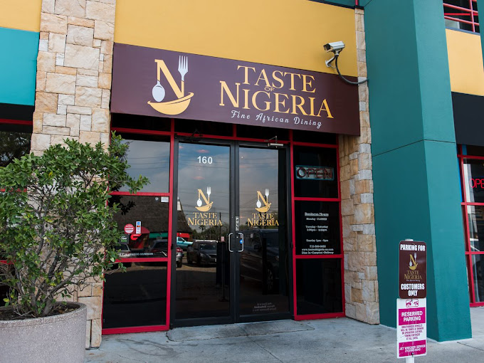
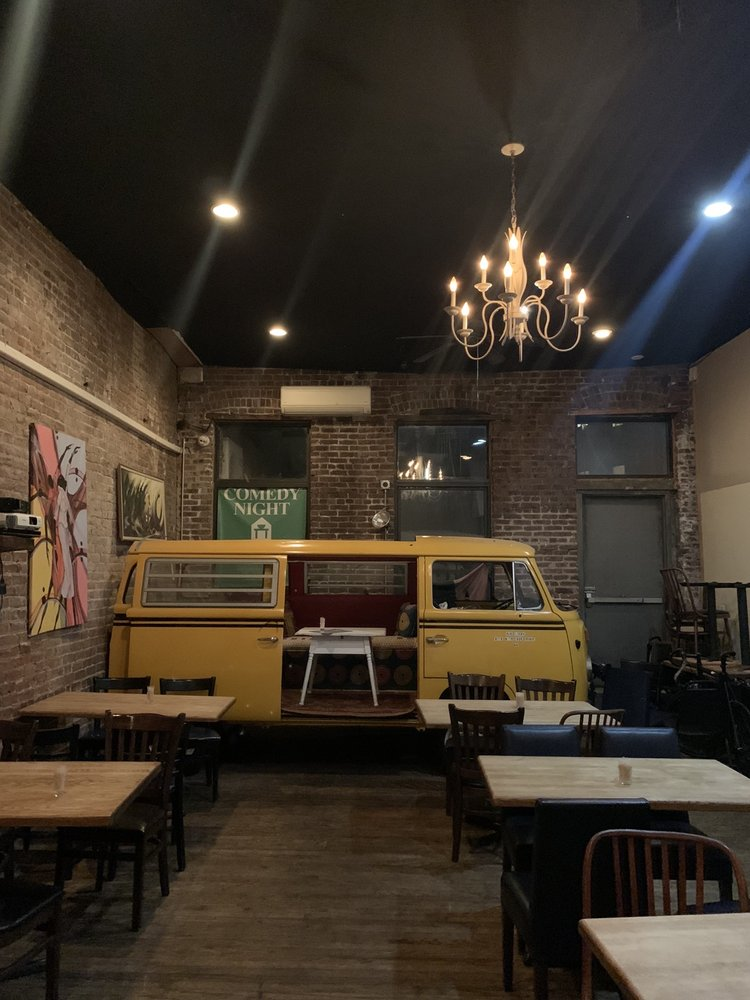
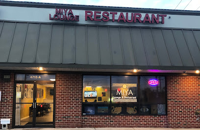

Bringing Naija Cuisine to the States
There are several reasons why people should consider visiting Nigerian restaurants in America:
- Authentic Cuisine: Nigerian restaurants in America offer a taste of authentic Nigerian cuisine, which is characterized by bold and flavorful spices, savory stews, and delicious soups. The dishes are made with traditional ingredients and cooking methods, allowing customers to experience the true flavors of Nigeria!
- New and Exciting Flavors: For those looking to try something new and exciting, Nigerian cuisine offers a unique and delicious flavor profile that is unlike anything else. From spicy stews to savory soups and sauces, there is something for everyone to enjoy.
- Support Local Businesses: By visiting Nigerian restaurants, you are supporting local small businesses and helping to preserve and promote Nigerian culture in the United States.

In no particular order, here are a list of 10 amazing Nigerian restaurants to try in the United States!
-

- Olaide's Kitchen, located in Parlin, New Jersey
- Jollof Rice King, located in Houston, Texas
- Veronica's Kitchen, located in Inglewood, California
- Appioo Bar and Grill, located in Washington, DC
- Brooklyn Suya, located in Brooklyn, New York
- Abeke's Kitchen, located in Philadelphia, Pennsylvania
- Taste of Nigeria, located in Houston, Texas
- Buka, located in New York City, New York
- Cafe Songhai, located in Atlanta, Georgia
- Miya Lounge, located in Beltsville, Maryland
Olaide's kitchen started as a catering business that operated out of chef Olaide's home kitchen. 18 years later, it expanded into the restaurant space. But not only is it a restaurant, it's an experience. Get inspired while you dine alongside their African art gallery. Check out the elevated, yet authentic Nigerian dishes, like the Giz Dodo - sauteed gizzards and plantains infused with herbs and peppers - or the Efo Elegusi, a flavorful kale and pumpkin seed (egusi) stew cooked in palm oil.
With a bold storefront decked out in red and yellow, Jollof Rice King's aesthetic is as enticing as its flavors. While the restaurant is more of a grab and go style eatery, Jollof Rice King's menu is no less ambitious than the restaurants that preceded it. Suya — a broiled beef or chicken skewer — served with jollof rice and plantains, barbecued goat meat served with rice, and numerous pepper soups filled with protein like whiting, croaker fish, or chicken, are on the menu. And of course, there will be plenty of jollof rice!
A bright-yet-casual cafe preparing Nigerian specialties like fufu, pepper soup & jollof rice. A meal at Veronica's feels like you're eating inside someone's house, not an actual restaurant. Whether you're familiar with Nigerian cuisine or not, your first order of business here needs to be the egusi. It's a rich, fragrant stew made from dried melon seeds, pumpkin leaves, palm oil, onions, and your choice of protein on top.
Although owner and chef Prince Matey introduced two new dishes that he developed early in the COVID quarantine - a minced goat burger and seafood okra stew - his clients still love the staples. That includes light pepper soup with fufu and meat or fish, waakye (black eyed peas cooked with brown rice) served with black pepper sauce (Shinto) and ampesi (boiled yam and boiled green plantain) served with spinach stew. And, of course, jollof rice.
Brooklyn Suya brings fast casual West African dining to the States. Build your own suya bowl with a choice of meat/protein; add ons like avocado, egg, kale, plantain, mushrooms, eggplant, and vegetables; a base of either rice or kale; and mild, medium or spicy sauce. But the star of every bowl is the suya spice mix, which consists of peanuts, various aromatics, and ground up peppers.
This African restaurant is a perfect location to loosen up as well as dine in with your friends or loved ones. Its excellent customer service and many delicious West African foods are something that makes the restaurant stand out from the rest! The overall ambience of the restaurant is very warm and welcoming, and it is for sure that you are going to love your time there.
This Houston-based establishment is one of just a few restaurants filling the void for authentic Nigerian food in the H. The Odewales use the freshest ingredients to prepare appetizers like Isiewu, a spicy diced goat head served in a thick sauce, and main dishes like Banga soup, a palm nut soup made with beef, dry fish, and crayfish. Taste of Nigeria boasts over a dozen menu options and offers delivery and catering services.
At Buka in Brooklyn, New York, diners will find "good old-fashioned Naija cooking" for delivery and curbside pickup. For dinner, try the Edikaikong, goat and tripe meat cooked in spinach with crayfish, dried shrimp and periwinkle, with fufu on the side. Wash down the filling meal with a glass of Zobo, Nigerian hibiscus iced tea.
If you're seeking authentic West African cuisine representing Nigeria, Ghana, and the Ivory Coast, in Peachtree Corners, Georgia, Cafe Songhai is the place to pick up takeout. There are traditional Nigerian selections such as egusi soup; Ghanaian food such as Kelewele, deep-fried, lightly spiced, diced sweet plantain; and Ivory Coast fare Attiéké, ground cassava, servedwith fried tilapia fillet or red snapper.
If you are looking forward to experiencing unique culinary cuisine, look no further. Miya is a family owned restaurant and their mission is to unite families and cultures together through African cuisine and art. Although the restaurant is quite small, the ambience is very beautiful and welcoming. So, if you're planning brunch with friends and family, this African restaurant is ideal to visit.